DIABLO III


Estamos orgullosos del ambiente oscuro y siniestro del Diablo original y de lo adictiva que es la experiencia de obtención de objetos. Diablo II añadió más variedad de entornos y monstruos, unas clases más diversas y varios elementos únicos como las gemas, las runas, los conjuntos, etc.
Ambos juegos cuentan con los elementos distintivos de la serie: niveles generados aleatoriamente, masacre despiadada de monstruos y acontecimientos en un mundo siempre cambiante, búsquedas únicas, montones de objetos y una historia épica sobre el cielo, el infierno, y los indefensos y heroicos humanos que se ven atrapados entre ambos mundos.
Diablo III es el heredero de este legado. Hemos añadido aún más elementos al juego para expandir nuestra visión del mundo de Santuario.
| 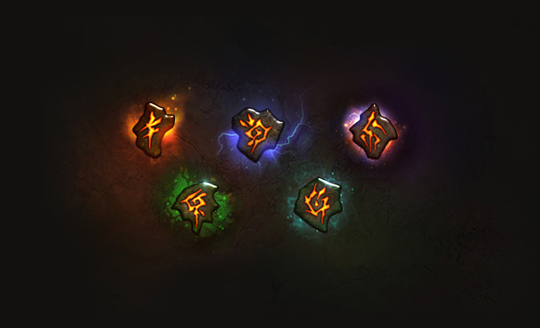 | 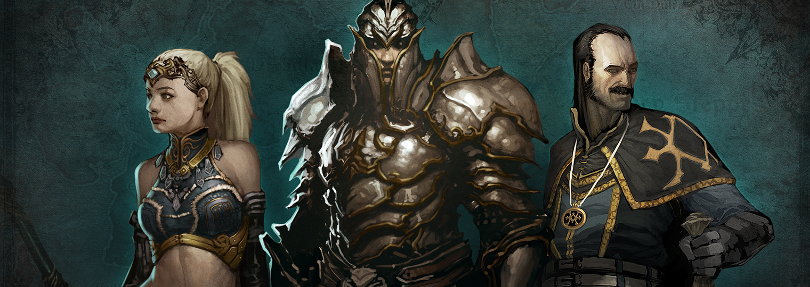 | 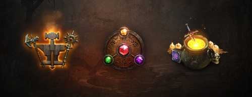 | 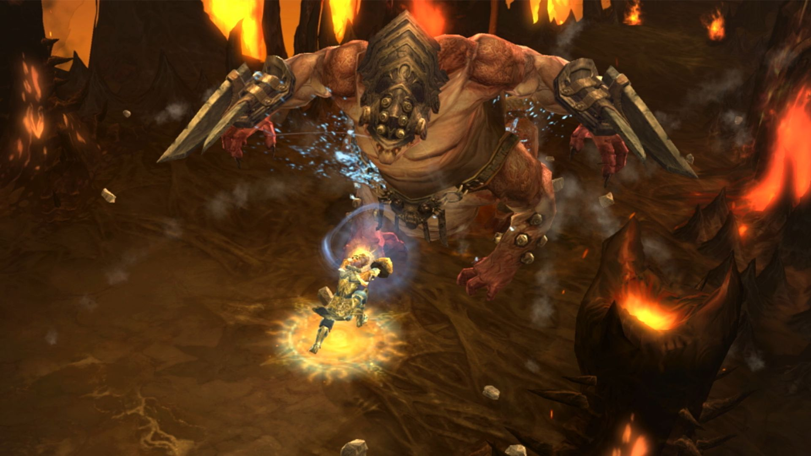 |
RUNAS DE HABLIDAD |
SEGUIDORES |
ARTESANIA |
CLASES Y HABILIDADES |
| 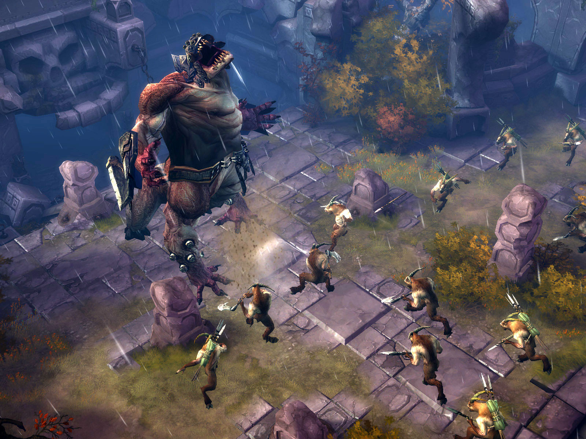 | 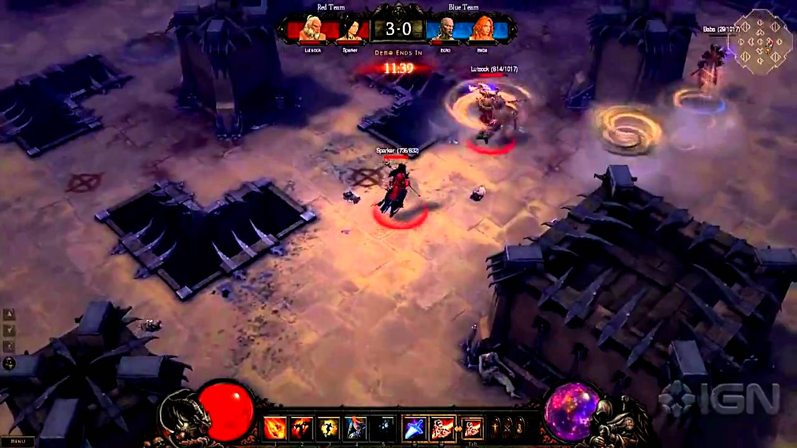 | 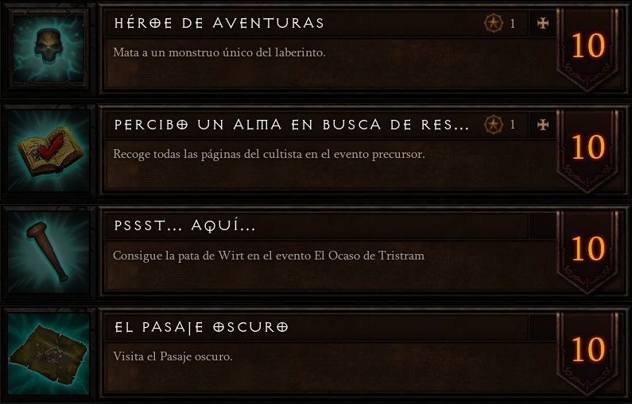 | 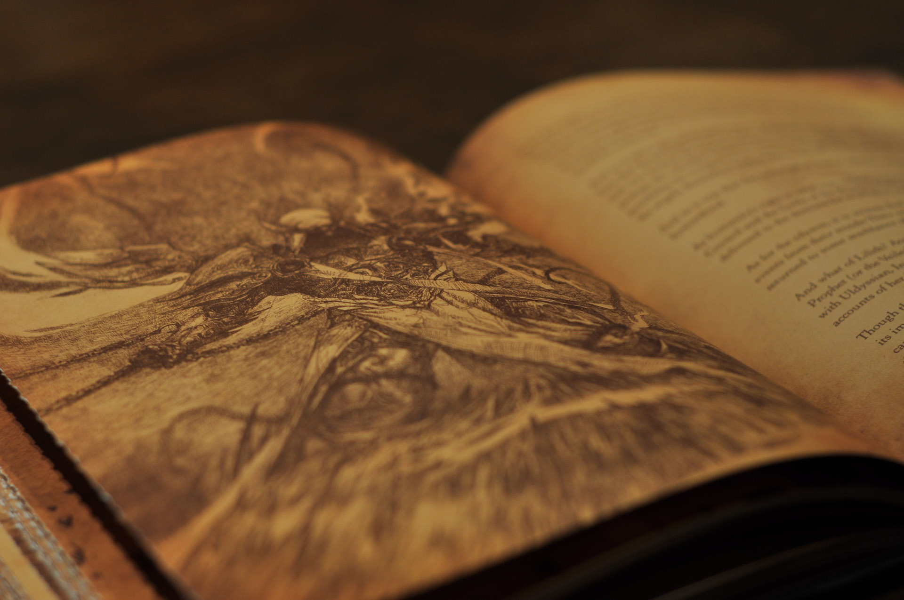 |
MONSTRUOS Y OBJETOS |
JUGADOR VS JUGADOR |
LOGROS |
HISTORIA ÉPICA |
| 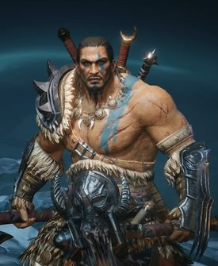 | 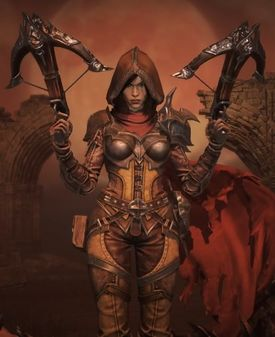 | 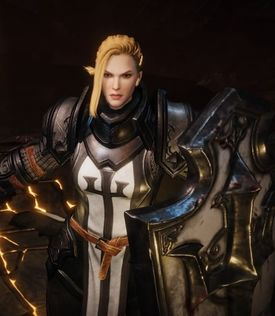 | 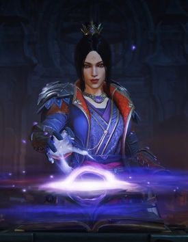 |
BÁRBARO |
CAZADORA DE DEMONIOS |
CRUZADO |
MAGA |
| 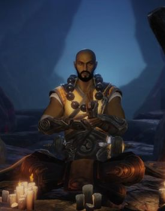 | 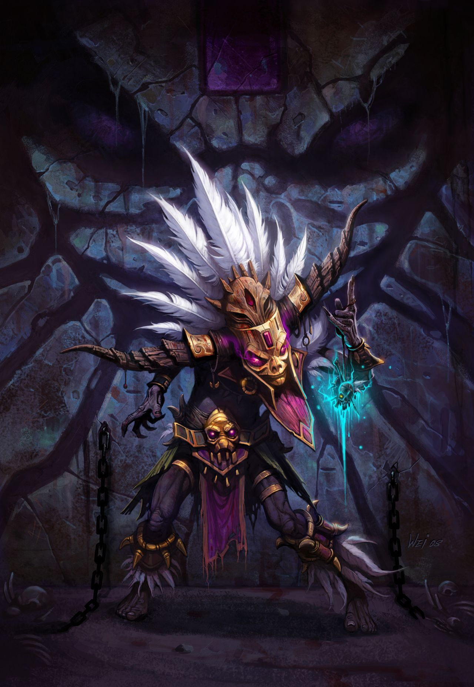 | 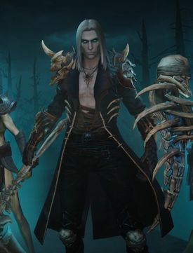 |
MONJE |
MÉDICO BRUJO |
NIGROMANTE |